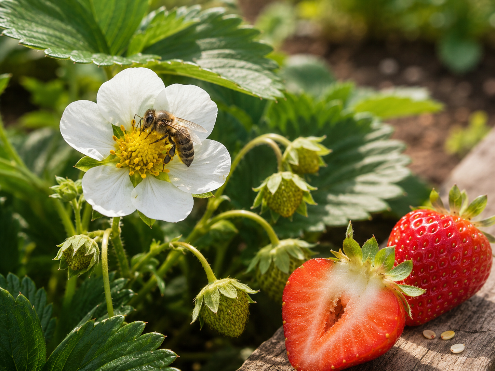
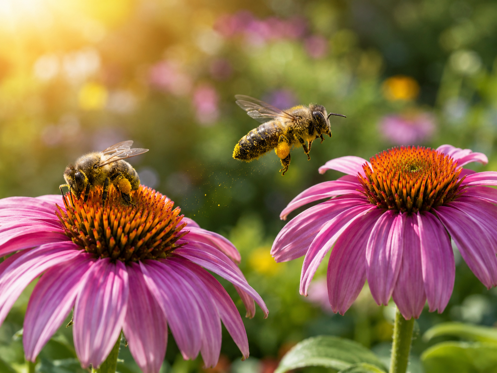
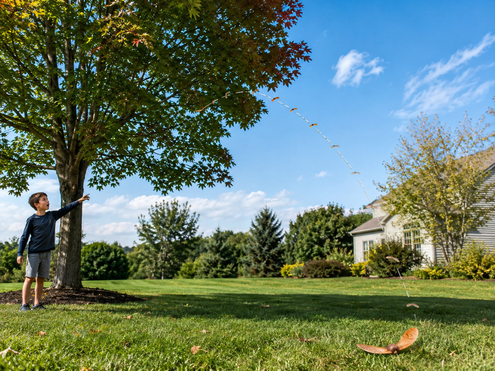
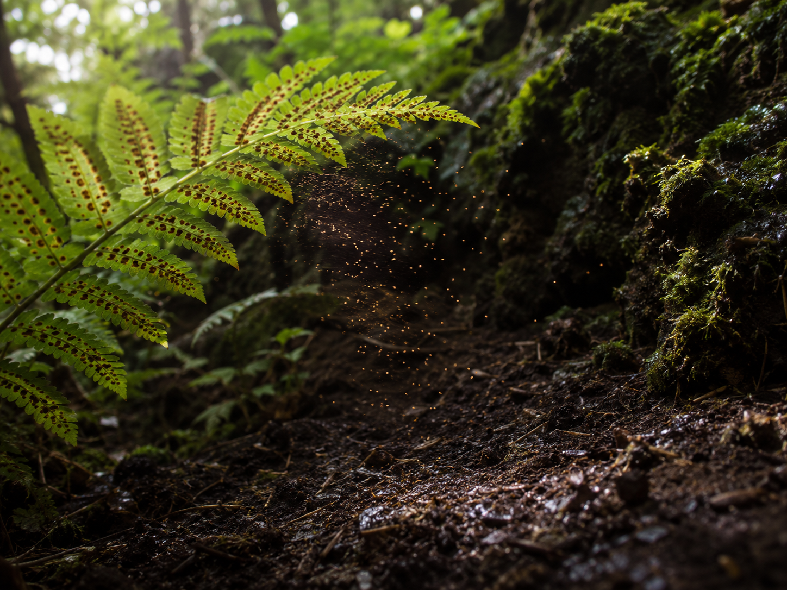
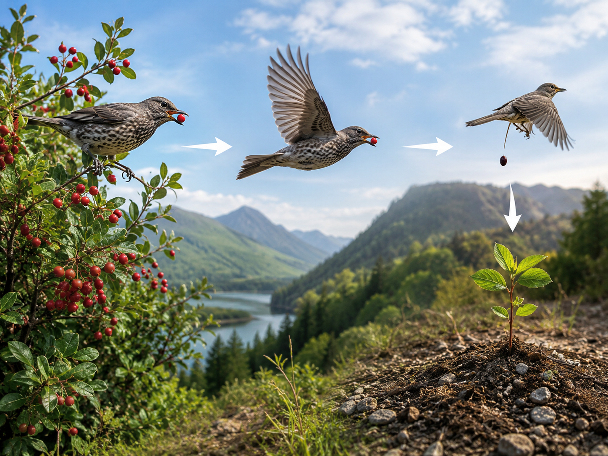

Hold this question in your mind as you work through the lesson. By the end, you should be able to answer it with evidence!
Picture a bee landing on a bright flower. A few weeks later, that same flower has turned into a fruit — and inside that fruit are tiny seeds. Something amazing happened in between.
There are no wrong observations. Scientists always start by looking carefully and asking questions.
These are the words scientists use when they talk about plant reproduction. Tap each card to flip it and read the definition. You'll see these words all through the lesson!
Copy this sentence carefully into your science notebook:
"A tiny seed holds the beginning of a whole new plant."

When a plant reproducesreproduceTo make new living things of the same kind., it makes new plants just like itself. Without reproduction, plants would eventually disappear.
Some plants reproduce using seeds. Others — like ferns and mosses — reproduce using sporessporeA tiny cell that can grow into a new plant, used by ferns and mosses.. Both are ways of starting a new life.
Many plants grow flowers. Flowers make a powdery material called pollenpollenA powdery material made by flowers that must travel to another flower to help make seeds.. For seeds to form, that pollen has to travel from one flower to another — a process called pollinationpollinationWhen pollen moves from one flower to another, making it possible for seeds to form..
Wind can carry pollen, but animals do most of the work. Bees, butterflies, and hummingbirds are all pollinatorspollinatorAn animal that carries pollen from flower to flower. — they pick up pollen while feeding, then drop it off at the next flower.
After pollination, many plants form seeds. Those seeds need to get away from the parent plant to find space to grow. Seeds travel by wind, water, animals, and even gravity.
Ferns don't make flowers or seeds at all. Instead, they release tiny spores from the undersides of their leaves. The spores drift through the air and, if they land in the right spot, grow into new ferns.
Real-World Connection: Next time you blow a dandelion, you're helping it spread its seeds. Each fluffy white parachute carries one tiny seed — and the wind can carry it far from the parent plant.
Plants reproduce — they make new plants of the same kind. Flowering plants often use pollination and seeds. Ferns and mosses use spores instead. Either way, the goal is the same: new life.
Curious? Go Deeper
What's actually inside a seed? A seed isn't just a hard little shell. Inside, there's a tiny plant embryo — a miniature root, stem, and leaves all waiting for the right moment. There's also stored food to power the seedling until it can make its own through photosynthesis.
Some seeds are remarkably patient. Jack pine trees in northern forests have cones that stay sealed shut for years — until a forest fire heats them enough to open. Then thousands of seeds drop into the ash-enriched soil all at once. The fire that looks like destruction is actually the signal the tree has been waiting for.
You'll need: Science notebook, pencil, colored pencils

A bee lands on a flower, picks up yellow pollen on its body, then flies to a second flower of the same type and brushes against it.

A maple tree drops a winged seed. It spins like a helicopter as the wind carries it across the yard and lands 30 feet from the parent tree.

A fern in a shady corner releases tiny brown dots from the undersides of its fronds. They drift away on the breeze and eventually settle on damp soil.

A bird eats a bright berry from a bush, flies two miles away, and drops the seeds in its droppings. The next spring, a new bush sprouts in that spot.
| Case | Plant Part Used | Reproduction Method | How It Moves |
|---|---|---|---|
| A — Bee | write here… | write here… | write here… |
| B — Maple | write here… | write here… | write here… |
| C — Fern | write here… | write here… | write here… |
| D — Bird | write here… | write here… | write here… |
Work through each step carefully in your notebook.
Fill the chart. For each case, decide: what plant part is involved (pollen, seed, or spore)? What's the reproduction method? How does it travel?
Draw one case. Pick the case that interests you most. Draw a simple diagram showing what happens, with arrows to show the direction of movement. Label at least 3 parts.
Write one pattern sentence. What do all four cases have in common? Start with: "In all these cases, the plant…"
In your notebook, answer each question in a complete sentence.
Tell the story of one case from start to finish — what the plant does, what moves, and where new life begins. Use your chart and diagram to help you.
Think through each question on your own. Write your answers in your science notebook before moving on.
Word Bank: flower · pollen · pollinator · seed · spore · new plant
🔍 Part A — Label and Identify
In your science notebook, draw the plant reproduction cycle. Use the word bank above.
🚀 Part B — Short Answer
Answer each question in complete sentences. Use your science vocabulary!
Pick one of the four cases from your investigation. Explain how that plant reproduces and what would happen if something went wrong.
What do you think?
💡 Start with: "I think the most important part of this plant's reproduction is…"
What did you observe or learn that supports your thinking?
💡 Start with: "I know this because in the case cards I noticed that…"
Why does that make sense?
💡 Start with: "This makes sense because…"
📚 Try to use at least one of these words in your answer: reproduce, pollination, seed
🎨 Part C — Draw & Label
Draw a nature scene showing two different ways plants reproduce. Label at least 5 parts using words from the word bank.
Submit your work on Canvas using one of these options:
Make sure your submission includes all of these: